注意事項筆記 · 來自 Obsidian · 2026-08-17 擷取
越南电子入境卡填写保姆级教程
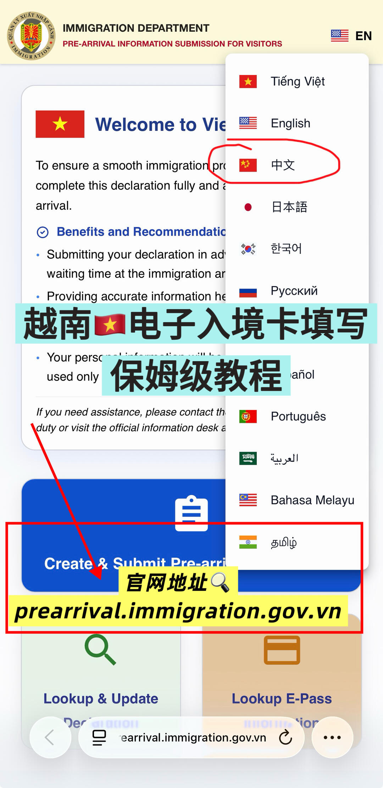
🇻🇳 電子卡填寫官網：prearrival.immigration.gov.vn（越早填越省入境排隊時間，記得抵達前填完）
開啟 `prearrival.immigration.gov.vn`，頁面右上角語言選單切換成中文，點藍色按鈕「創建並提交行前信息」（Create & Submit Pre-arrival）。
出現驗證碼彈窗，輸入圖中顯示的驗證碼（如 5XAZA），點「核實」。
國籍選 China（下拉選單選中國）。
- 預計到達日期：選抵達越南的日期
- 上傳護照照片（上傳後護照號碼等資訊會自動填好）
- 護照類型：P – Popular Passport
- 核對護照號碼、到期日期
- 性別、姓氏、名字（姓氏要和護照一致）
- 出生日期（注意格式）
- 國籍：China、國家代碼 (+86)
- 簽證類型：電子簽 / 落地簽 / 另紙簽（對應數字輸入框）
- 簽證號碼：另紙簽看紅色數字
- 簽發日期、到期日期（看簽證上右邊日期列）
- 若幫同行人填寫，點「添加乘客 +」重複步驟
- 填寫簽證號碼可啟用機場自動閘門服務
- 填自己的郵箱號
- 「與領頭乘客的關係」：幫父母填就選父母、幫孩子填就選子女（配偶/子女/父母/兄弟姐妹/祖父母）
- 沒幫同行人填寫信息的話，可以直接跳過這頁
- 抵達越南前的出發地點：從中國出發就選 China
- 旅行目的：選「旅遊」
- 旅行方式：空運（飛機）
- 航班代碼：填航班號
- 邊境口岸：選抵達機場
- HAN 河內｜DAD 峴港｜SGN 胡志明｜PQC 富國島｜CXR 芽莊金蘭
- 航班號
- 入境口岸（如 DAD 峴港國際機場）
- 越南住宿類型（如「住宅」）+ 住宿地址（複製自己訂的酒店地址）
- 預計離開越南的日期
- 點「審核並提交」
- 頁面顯示「您的提交成功！」
- 截圖保存好二維碼（之後查詢申報信息用）
- 下載 PDF 格式的行前卡
- 確認函及出入境（DE）號碼會發到你的郵箱，越南逗留期間可下載/打印副本
官網 `prearrival.immigration.gov.vn`（切中文）→ 創建提交 → 驗證碼 → 國籍 China → 上傳護照＋填乘客信息 → 簽證信息（另紙簽看紅色數字）→ 郵箱/同行人 → 旅行信息（航班＋抵達機場）→ 住宿地址 → 提交後截圖保存二維碼＋下載 PDF！
📸 實拍（共 12 張）
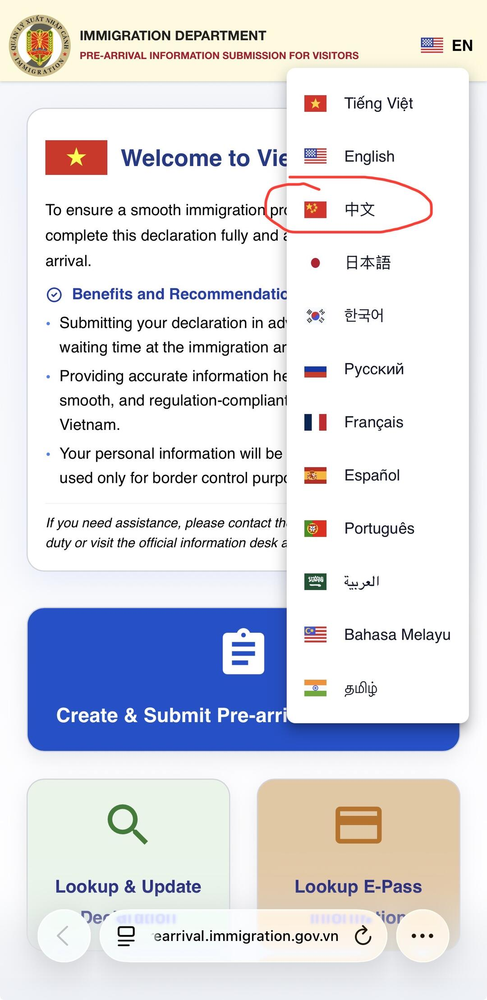
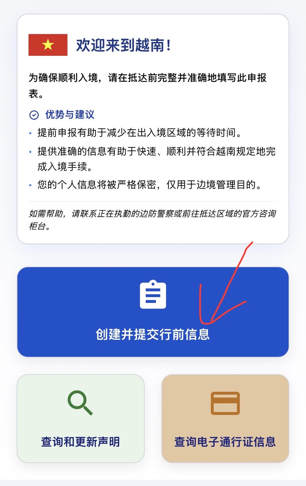
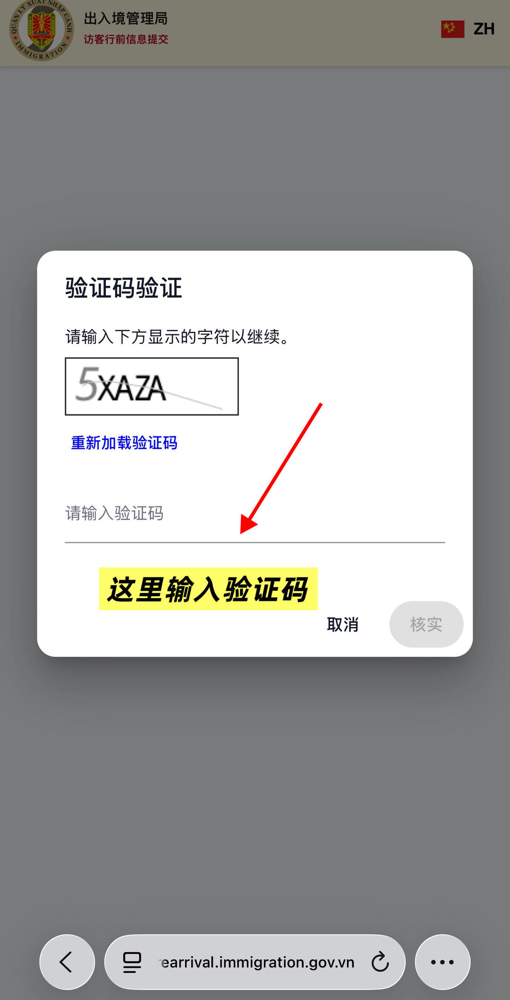
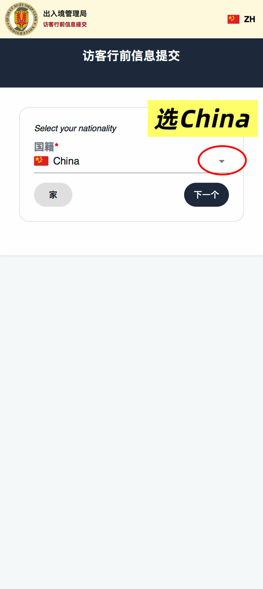
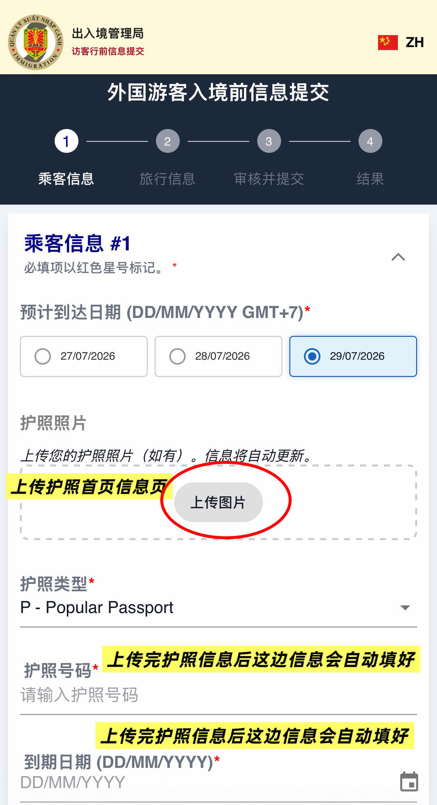
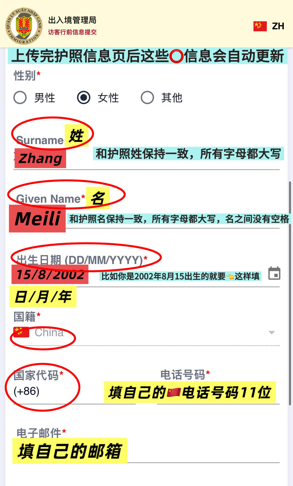
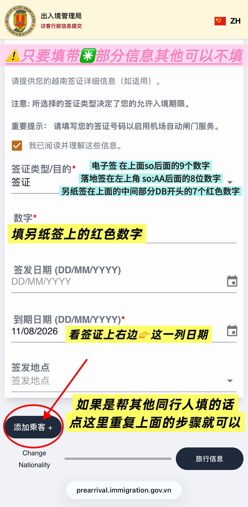
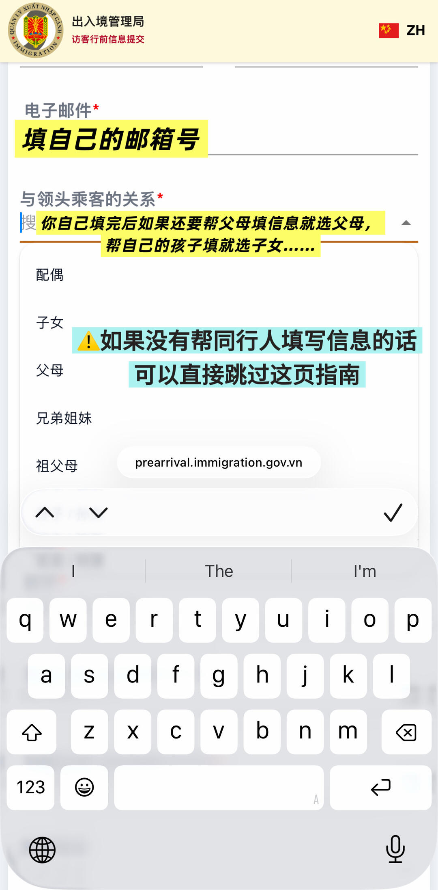
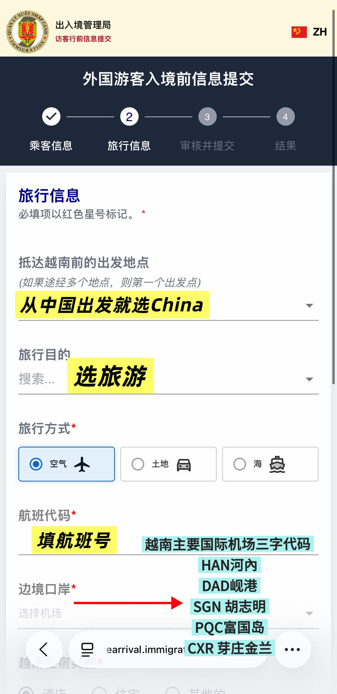
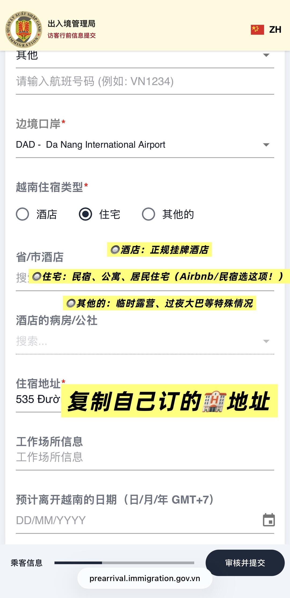
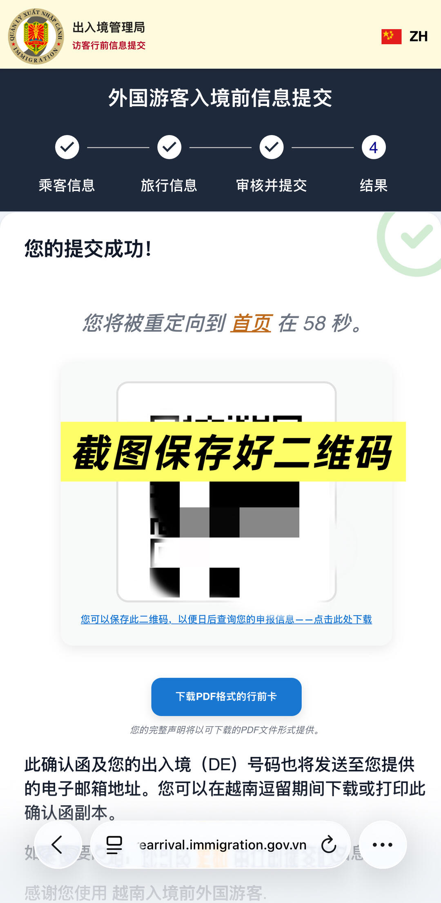
📌 資料來源：內容與全部 12 張照片來自小紅書實地帖文（Pebble 擷取至 Obsidian，2026-08-17）。
出發前建議以現場或官方最新資訊為準。